Ca$h Money Voters
| Name | Title |
|---|---|
| Daniel Nasaw | Managing Editor, WSJ - Capital Journal |
| Hisham Talukder | Data Scientist |
| Derian Andersen | Data Engineer |
Campaign cash, new voters, and the 2016 election
Political news coverage is a ripe arena with plenty of data to count and aggregate, and there’s maps!
Our aim is to show how big, publicly available data to tell stories about American politics -- with the ultimate goal of producing online graphics, interactives and stories for print and the web.
Campaign Finance
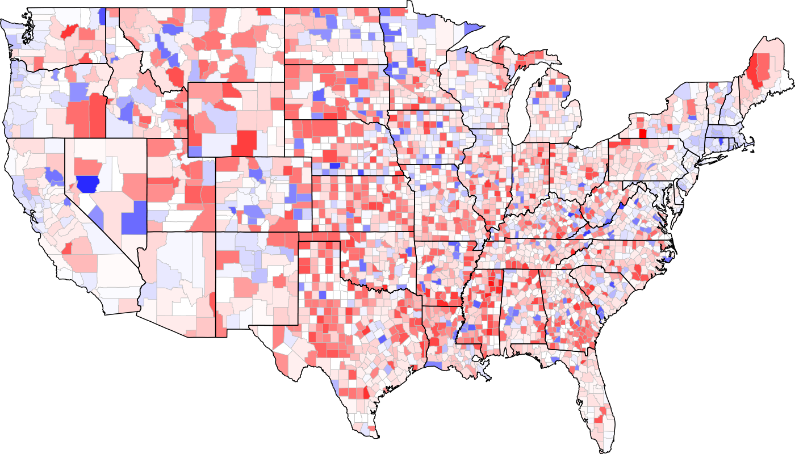
Campaign Finance
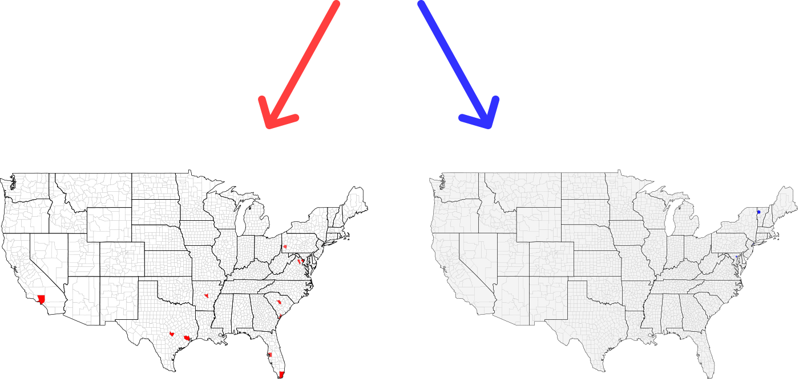
Campaign Finance
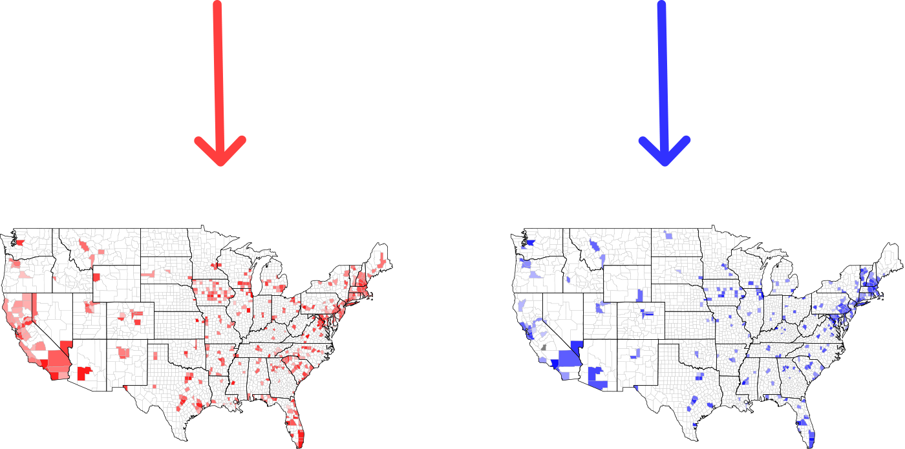
Voter Registration - Florida
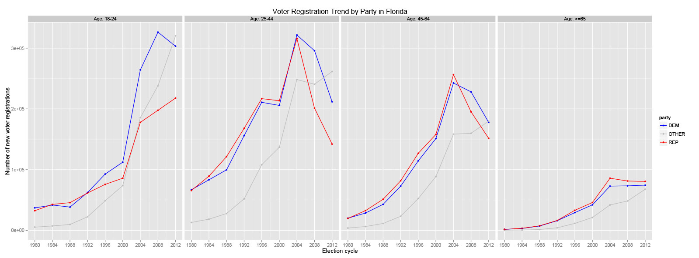
Voter Registration - Colorado
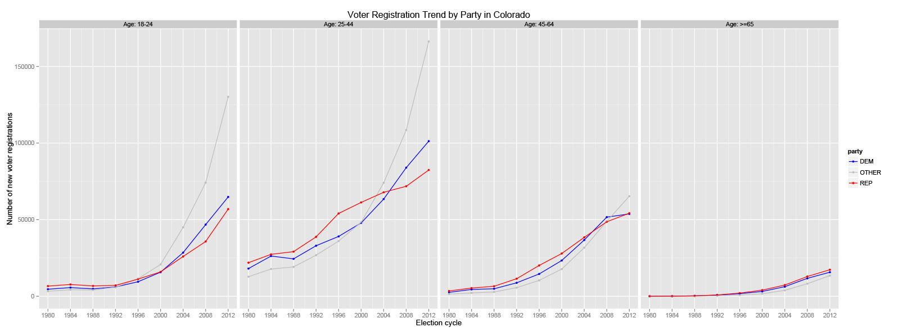
Voter Registration - North Carolina
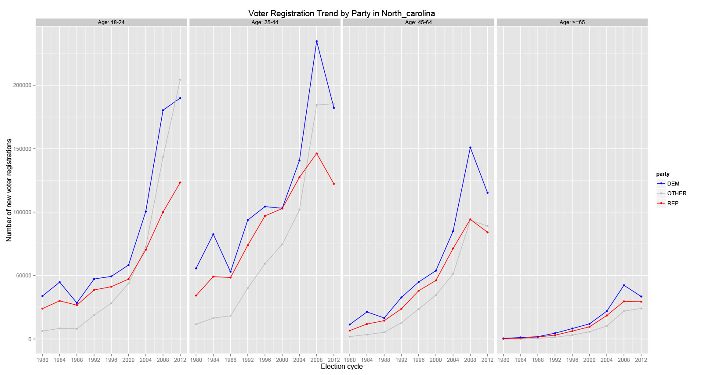
Voter Registration - Ohio
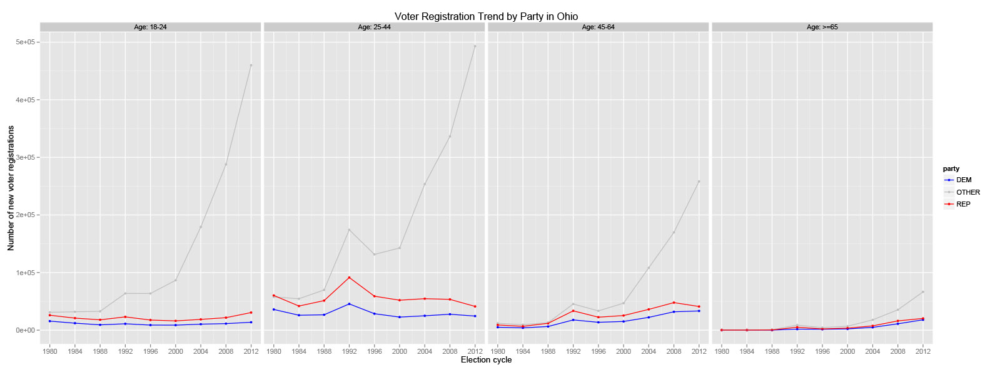
Voter Registration - Idaho
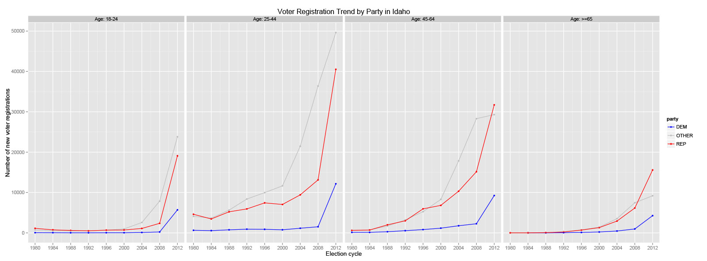

Predictions for 2016 General Election

Isabella Venture Navigator
| Name | Title |
|---|---|
| Christopher Zinsli | Editorial |
| Thomas Vincent | Data Scientist |
| Dylan Roy | Data Engineer |
Isabella Venture Navigator
Startups funded by venture capital are a major source of innovative technologies. Beyond Silicon Valley, startup ecosystems are sprouting in cities across the country, from Colorado to Minnesota to Texas. Until now there hasn’t been a good way of seeing what’s really going on in these communities of high-tech businesses. What new industries are taking shape? What investors are funding the growth? What major companies are emerging from these ecosystems? An interactive map would enable our customers to delve into the world of startups at a granular level that hasn’t previously been possible.
What is Isabella?
An interactive map of venture-capital investment.
- National
- State
- Local
What Isabella Does
- Like its namesake, it enables people to explore the U.S.
- Enhances Dow Jones’s in-house VC database VentureSource
- Surfaces trends and identifies key figures
Isabella Has Answers!
- Who are the power players in each city’s startup scene?
- Which areas are developing the best tech ecosystem?
Features
- Power Score: How strong is an area’s ecosystem?
- Key Players: Who’s in charge?
- Investment Trends: Follow the money.
- Emerging Industries: What sectors are on the rise?
- Hot-Button Issues: Gender in tech.

Who Can Use It?
Editorial: Our reporters and editors will use it every day.
- VC Pro
- WSJ’s Tech Bureau
- Digits
Customers: Subscribers will gain access to deeper data and insights.
- VC firms
- Investment banks
- Tech startups
- High-net-worth individuals and angel investors
Why It's Important
- VC investment hasn’t been higher since the dotcom boom
- New class of private investors thanks to JOBS Act
- VentureSource’s regional data gets a lot of attention
Options For Expansion
WE CAN DO EVEN MORE!
- More Data: more than 20 years of information is at our fingertips
- More Visualizations: valuations, region-by-region direct comparisons, VC reach and more
- Export: investors can cite our data
- World-Wide: explore global trends
Where To Retire?
| Name | Title |
|---|---|
| Silvia Ascarelli | Senior News Editor, MarketWatch |
| Shawn Simpson | Data Scientist |
| Ben Sinchai | Data Engineer |
| Diego Saldana | Data Scientist |
Where Should I Retire?
It’s easy to find a list that claims to show the “best” places to retire.
But those lists aren’t based on your personal criteria – and may even have been subjectively massaged by the list’s creators.
Our tool lets you define what factors are important to you, with a heavy emphasis on lifestyle criteria. We crunch the data based on your picks and spit out a list of up to 20 possible cities and towns where you may want to retire. You can then share our suggestions on Facebook and get feedback from friends.
A more advanced version of this tool will link to information from Realtor.com
What Are My Retirement Options?
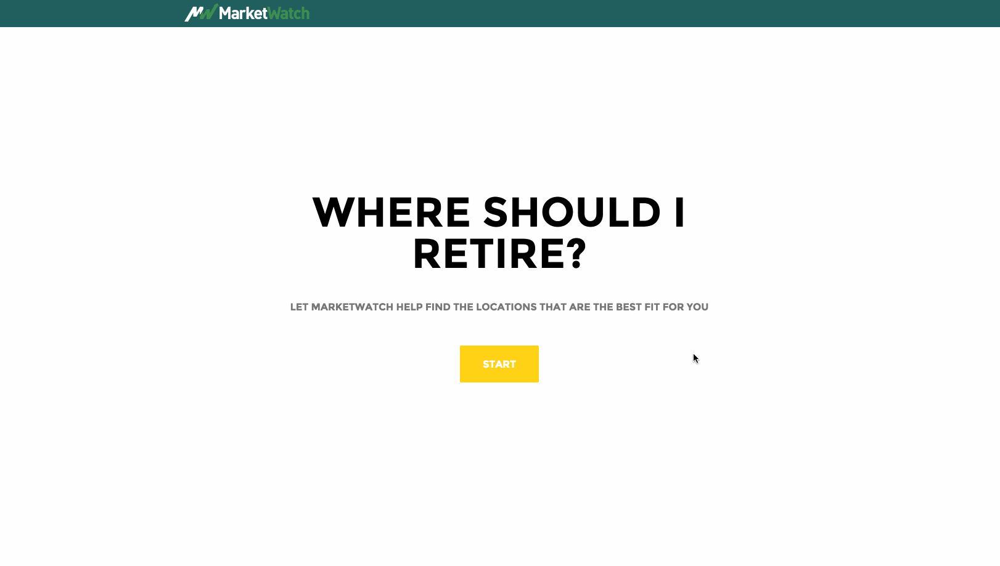
Cyber Warfare in the Middle East
| Name | Title |
|---|---|
| Asa Fitch | Reporter, The Wall Street Journal |
| Aparna Kumar | Data Scientist |
| Josh Ewer | Data Engineer |
Cyber Warfare in the
Middle East
Attempted Sources
of Data
Scraping the Data
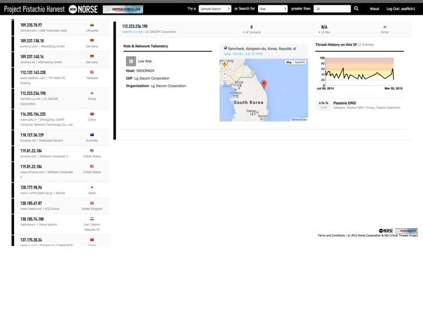
Scraping the Data

Scraping the Data
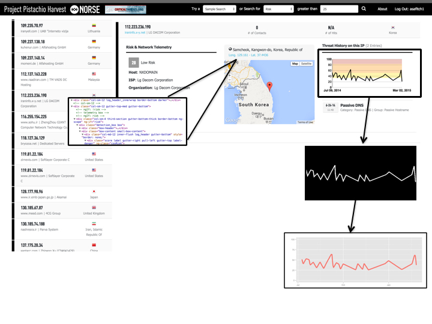
Scraping the Data
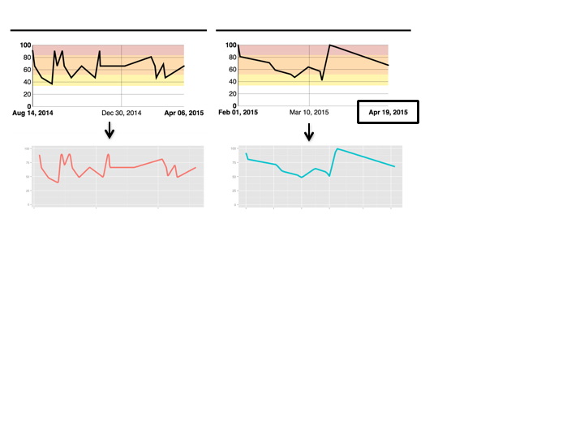
Scraping the Data

Scraping the Data
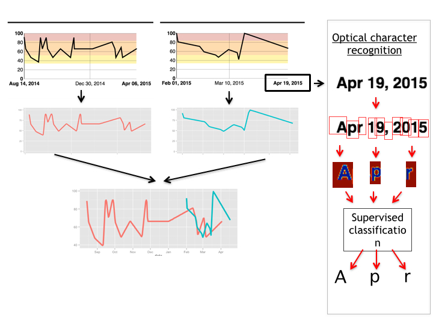
Scraping the Data
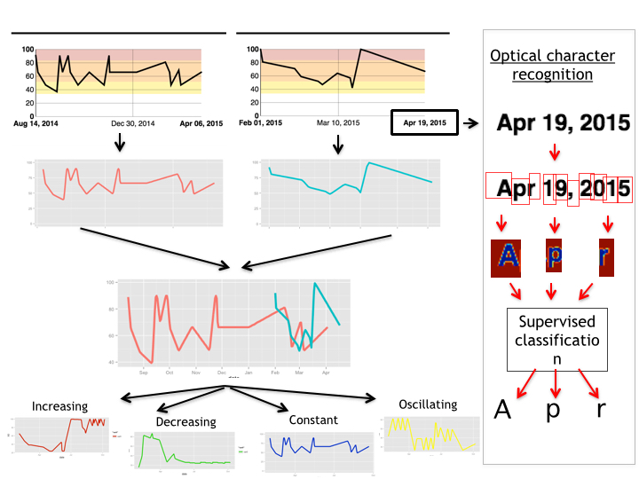
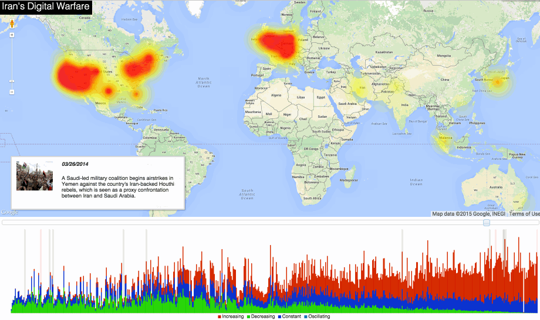
THANK YOU
Thank you for participating in the 2015 Dow Jones Datathon!